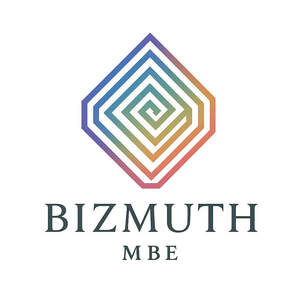

Trade Mark Journal No.2025/026 27 June 2025
UK00004219741 16 June 2025 (9,41,42)
Mark 1

Mark 2
- Class 9
- Software; Computer software; Computer software packages; Enterprise software; Software for computers; Programming software; Computer software applications; System software; Software applications; Computer software for computer aided software engineering; Computer application software; Downloadable computer software; Computer software platforms; Computer software programs; Hardware testing software; Interface software; Downloadable software; Computer software applications, downloadable; Downloadable computer software applications; Simulation software; Computer interface software; Platform software; Operating software; Programs (Computer -) [downloadable software]; Computer programs [downloadable software]; Software suites; Intranet software; Optimisation software; Educational computer software; Hardware reliability software; Computer software [programmes]; Manufacturing software; Testing software; Computer software for database management; Downloadable software applications; Business technology software; Downloadable computer software for the management of data; Education software; Training software; Simulation software [training]; Science software; Scientific research and laboratory apparatus, educational apparatus and simulators; Scientific apparatus and instruments; Semiconductors; Optical semiconductors; Semi-conductors; Semiconductor devices; Electronic semi-conductors; Semiconductor wafers; Semiconductor elements; Silicon chips [electronic components]; Semiconductor apparatus; Computer software for use in processing semiconductor wafers; Structured semi-conductor wafers; Silicon wafers; Solid-state lasers; Semiconductor testing apparatus.
- Class 41
- Education; Education and training; Academies [education]; Education services; University education services; Education, teaching and training; Academy services (Education -); Education academy services; Academy education services; Training and education services; Education and training services; Education and instruction services; Provision of education courses; Educational services for providing courses of education; Higher education services; Provision of education and training; Provision of training and education; Providing of education; Adult education services; Computer education training services; Technological education services; Online education services; Education courses relating to automation; Educational and teaching services; Education in the field of computing; Education services in the nature of courses at the university level; Education services relating to industry; Provision of education courses relating to computers; Training; Training courses; Training and instruction; Personnel training; Training consultancy; Training services; Education and training consultancy; Advanced training; Practical training; Providing of training; Providing training; Providing courses of training; Conducting training seminars; Postgraduate training courses; Computerised training; Workshops for training purposes; Computer training; Industrial training; Training services for personnel; Practical training services; Educational and training services; Computer education training; Arrangement of training courses in teaching institutes; Conducting training seminars for clients; Providing online training seminars; Engineering training services; Providing of continuous training courses; Organisation of seminars relating to training; Practical training [demonstration]; Arranging and conducting of training courses; Courses (Training -) relating to engineering; Training for handling scientific instruments and apparatus for research in laboratories.
- Class 42
- Development of computer hardware and software; Computer software integration; Computer software development; Development of computer software; Computer software consultancy; Consultancy (Computer software -); Software engineering; Computer software consulting; Computer hardware and software design; Design of computer hardware and software; Design of computer software; Computer software design; Software development; Development of software; Computer software installation; Installation of computer software; Update of computer software; Design of software; Software design; Development of computer database software; Design and development of computer hardware and software; Installation of software; Software installation; Computer software maintenance; Computer software (Maintenance of -); Maintenance of computer software; Computer software design services; Services for the design of computer software; Design of computer database software; Developing computer software; Upgrading of computer software; Updating of computer software; Software (Updating of computer -); Computer software (Updating of -); Software as a service [SaaS] featuring software for machine learning; Development of computer software application solutions; Computer software programming services; Hiring of computer software; Computer software research; Scientific and technological design; Technical project studies in the field of computer hardware and software; Research in the field of computer hardware; Scientific and technological services; Scientific technological services; Research relating to the development of computer hardware; Testing of computer hardware; Scientific and industrial research; Scientific computer programming services; Design of computer hardware; Computer hardware (Design of -); Computer hardware design; Technical consultancy relating to the use of computer hardware; Scientific research; Research (Scientific -); Scientific design services; Hardware design; Laboratory (Scientific -) services; Scientific laboratory services; Computer aided scientific research services; Scientific research services; Scientific services; Providing technical advice relating to computer hardware and software; Design and development of computer hardware for the manufacturing industry; Scientific research and development; Consultancy in the field of computer hardware; Computer hardware (Consultancy in the field of -); Computer aided scientific testing; Troubleshooting of computer hardware and software problems; Software research; Research and consultancy services relating to computer hardware; Consultancy in the design and development of computer hardware; Computer hardware (Consultancy in the design and development of -); Design and development of computer hardware architecture; Design of computer hardware for the manufacturing industries; Providing information about the design and development of computer hardware and software; Consultations in the field of computer hardware; Scientific testing services; Design and development of computer hardware for the manufacturing industries; Design services relating to computer hardware; Research and development of computer software; Scientific analysis; Computer aided scientific analysis services; Advice relating to the design of computer hardware; Consultancy and advice on computer software and hardware; Technological research; Computer software technical support services; Designing of computer hardware; Advisory services relating to computer hardware design; Scientific consultancy; Scientific research and analysis; Computer software engineering; Rental of computer hardware and software; Customized design of computer hardware; Technological research relating to computers; Professional advisory services relating to computer hardware; Research, development, design and upgrading of computer software; Design services relating to computer hardware and to computer programmes; Diagnosing computer hardware problems using software; Technical support services relating to computer software and applications; Research in the area of semiconductor processing technology; Technical consultancy in relation to the production of semiconductors.
Bizmuth MBE Ltd